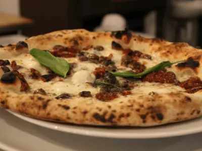
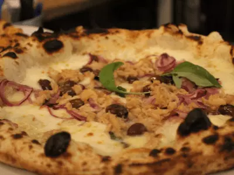
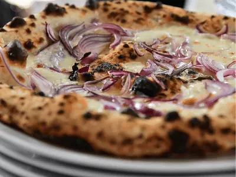
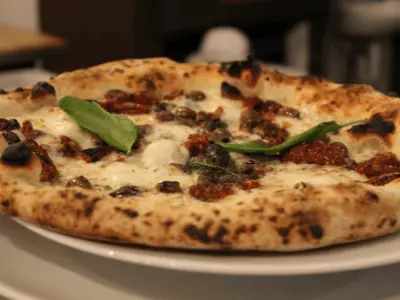
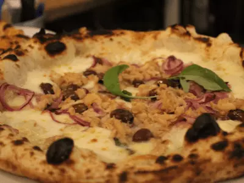
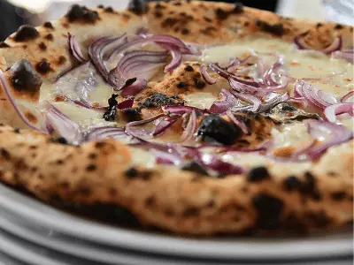

Le Classiche
-
MARGHERITA
€ 6,00
Pomodoro pelato italiano, mozzarella Fior d’Agerola, basilico fresco, olio EVO
-
CORBARINA
€ 6,00
Pomodorino Corbarino in succo di pomodoro, basilico, aglio rosso di Nubia (Presidio Slow Food), origano di Sicilia, olio EVO a crudo
-
BUFALA DOP
€ 9,50
Pomodoro pelato italiano, mozzarella di bufala campana DOP, basilico fresco, olio EVO
-
BURRATA DI BUFALA
€ 12,00
Pomodoro pelato italiano, burrata di latte di bufala a crudo, basilico fresco, olio EVO a crudo
-
DIAVOLA
€ 8,00
Pomodoro pelato italiano, mozzarella Fior d’Agerola, spianata calabra, basilico fresco, olio EVO
-
CALABRESOTTA
€ 9,50
Pomodoro pelato italiano, mozzarella di bufala campana DOP, ‘nduja di Spilinga, cipolla rossa di Tropea, basilico fresco, olio EVO a crudo
-
COTTO & CHAMPIGNON
€ 8,50
Pomodoro pelato italiano, mozzarella Fior d’Agerola, prosciutto cotto di coscia nostrano, funghi champignon freschi, basilico fresco, olio EVO
-
AMERICANA
€ 8,50
Pomodoro pelato italiano, mozzarella Fior d’Agerola, wurstel, bacon, patatine fritte
-
CAPRICCIOSA SICILIANA
€ 9,50
Pomodoro pelato italiano, mozzarella Fior d’Agerola, prosciutto cotto di coscia nostrano, carciofi a spicchi al naturale, funghi champignon freschi, olive nere, carpaccio di uova sode, basilico fresco, olio EVO a crudo
-
PARMIGIANA
€ 9,50
Pomodorino San Marzano DOP, mozzarella di bufala campana DOP del Consorzio, melanzane fritte, basilico fresco, olio EVO, Parmigiano Reggiano DOP
-
CALZONE CLASSICO
€ 9,00
Pomodoro pelato italiano, ricotta d’Agerola, mozzarella Fior d’Agerola, prosciutto cotto di coscia nostrano, salame Napoli, pepe nero, basilico fresco, olio EVO a crudo
-
FORMAGGI
€ 8,50
Pomodoro pelato italiano, mozzarella Fior d’Agerola, Gorgonzola DOP, gratinata di Parmigiano Reggiano DOP, fontina DOP, basilico fresco, olio EVO a crudo
-
RUSTICHELLA
€ 9,00
Provola affumicata d'Agerola, friarielli napoletani, pomodorino del Piennolo del Vesuvio DOP, in uscita salsiccia di Bra del Consorzio, basilico fresco, olio EVO a crudo
-
VEGANA
€ 9,00
Pomodoro San Marzano DOP, cipolla rossa di Tropea, friarielli napoletani, peperoncino, dadolata di olive nere, aglio rosso di Nubia (Presidio Slow Food), pan grattato
 





Le Bianche
-
CLASSICA
€ 4,00
Olio EVO, rosmarino tritato e origano di Sicilia bio a crudo
-
BRUSCHETTA
€ 5,00
Con pomodorini Pachino, aglio rosso di Nubia (Presidio Slow Food), olio EVO a crudo
-
RUCOLINA
€ 6,00
Rucola, pomodorini, scaglie di Grana Padano, olio EVO a crudo
-
TAGLIERE
€ 14,00
Pizza bianca misto salumi e misto formaggi
-
VEGETARIANA
€ 8,00
Mozzarella Fior d’Agerola, melanzane, zucchine, pomodori pachino, basilico fresco
-
CIPOLLA ROSSA & GORGONZOLA DOP
€ 8,00
Mozzarella Fior d’Agerola, gorgonzola Dop, cipolla rossa di Tropea, pepe nero
-
TONNO, CIPOLLA & OLIVE TAGGIASCHE
€ 8,50
Mozzarella Fior d’Agerola, tonno, cipolla rossa di Tropea, olive taggiasche, basilico fresco, olio EVO
-
SALSICCIA & FRIARELLI
€ 9,00
Mozzarella Fior d’Agerola, provola affumicata d’Agerola, salsiccia fresca, friarielli napoletani, aglio rosso di Nubia (Presidio Slow Food), peperoncino di Soverato fresco, basilico fresco, olio EVO
-
VALDOSTANA
€ 10,00
Mozzarella Fior d’Agerola, prosciutto cotto di coscia nostrano, fontina DOP, Parmigiano Reggiano
-
EQUILIBRATA
€ 9,00
Mozzarella Fior d’Agerola, prosciutto cotto di coscia nostrano, stracchino di latte di Bufala, zucchine, basilico fresco, olio EVO a crudo
-
VOLTURNO
€ 9,50
Provola affumicata di Agerola, pomodori secchi sott’olio, capperi di Salina, olive, origano, basilico fresco, olio EVO
-
NOVITA'!
-
LA PISTACCHINA
€ 12,00
Pesto di pistacchi, stracciatella di Bufala Campana, mortadella Bologna, basilico fresco e olio EVO
-
CHIACCHERE NAPOLETANE
€ 12,00
Stracciatella, prosciutto crudo di Parma a lunga stagionatura e pomodorini
Le Gourmet
-
CETARA IN SICILIA
€ 9,00
Sugo di pomodoro pelato italiano, mozzarella di bufala campana DOP del Consorzio, capperi di Pantelleria, olive nere, alici di Cetara salate a crudo, prezzemolo in uscita
-
LUCARIELLO
€ 10,00
Pomodoro pelato italiano, stracciatella di burrata pugliese, pomodorino giallo Lucariello dell’Agro Nocerino Sarnese, basilico fresco, olio EVO a crudo
-
CASA CANTONIERA
€ 11,00
Mozzarella di bufala campana DOP, basilico, pomodorino giallo Lucariello dell’Agro Nocerino Sarnese, pomodoro del Piennolo del Vesuvio DOP, Pecorino romano DOP grattugiato, olio EVO a crudo
-
CRUDO & FICHI
€ 11,00
Mozzarella Fior d’Agerola, stracchino di latte di bufala campana e in uscita prosciutto crudo di Parma a lunga stagionatura e fichi caramellati
-
PIEMONTESINA BELLA
€ 11,00
Mozzarella Fior d’Agerola, carpaccio di mele, formaggio Castelmagno DOP, granella di nocciole in uscita, olio EVO a crudo
-
QUATTRO POMODORI
€ 12,00
Pomodoro San Marzano DOP e mozzarella Fior d’Agerola, Pomodoro Corbarino, scalogno e origano di Sicilia, Pomodoro del Piennolo DOP, mozzarella di bufala Campana DOP del Consorzio, Parmigiano Reggiano DOP, Pomodorino giallo Lucariello dell’Agro Nocerino Sarnese, provola affumicata d’Agerola, basilico fresco, olio EVO
-
BRAIDESE
€ 8,50
Pomodoro San Marzano DOP, mozzarella Fior d’Agerola, salsiccia di Bra del Consorzio a crudo, basilico fresco, olio EVO a crudo
-
CALZONE FRITTO
€ 9,00
Ripieno di mozzarella Fior d’Agerola, ricotta d’Agerola, prosciutto cotto di coscia nostrano, salame Napoli, pepe nero, basilico fresco
-
NOVITA'!
-
ZUCCOSA
€ 11,00
Crema di zucca, provola affumicata d'Agerola, salsiccia in cottura, scaglie di Parmigiano Reggiano DOP, basilico fresco, olio EVO a crudo
-
AUTUNNO
€ 11,00
Crema di funghi porcini, provola affumicata d'Agerola e in uscita prosciutto crudo di Parma a lunga stagionatura e scaglie di Parmigiano Reggiano DOP